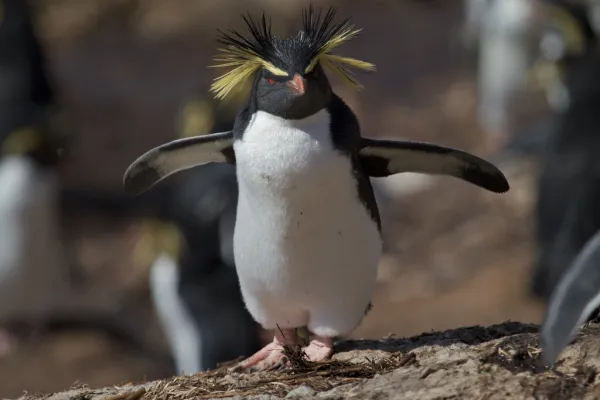

Pingüino emperador
El pingüino emperador (Aptenodytes forsteri) es el más grande de los
pingüinos, puede llegar a medir 120 cm de alto y pesar entre 20-45 kg.

Cada año, realizan un largo viaje para reproducirse. La hembra
pone un solo huevo que cuidan entre la pareja. Realizan turnos
para poder salir a alimentarse. No fabrican ningún nido, incuban
el huevo manteniendolo oculto entre sus patas.
Los pingüinos emperador utilizan las llamadas guarderías para
proteger a sus crías. Los polluelos se reúnen en grandes grupos,
en ocasiones varios cientos, para mantener el calor entre todos y
protegerse mientras sus padres se echan a la mar para alimentarse.
Pinguino Rey
El pinguino rey (Aptenodytes patagonicus) es el segundo pingüino más
grande del planeta, puede medir 100 cm y llegar a pesar 16 kg. Guarda
muchas semejanzas con el pingüino emperador pero con un tamaño menor.

Anida en Chile, islas de América del Sur y África. La hembra solo
pone un huevo y el cuidado es compartido por la pareja. La
elección de pareja se basa en la viveza de la coloración del
pelaje que es un reflejo de la salud del individuo. La parte
superior del pecho es naranja-amarillenta, al igual que en el área
auricular.
Pingüino de penacho amarillo
El pingüino de penacho amarillo o saltarocas (Eudyptes chrysocome) es
el más pequeño de los pingüinos con cresta. Habitan en islas cercanas
a la Antártida.

Miden 55 cm aproximadamente y pesan hasta 3,5 kg. Su cabeza negra,
posee unas pobladas cejas con plumas amarillas y negras. Sus ojos
son color rojo. Estos pingüinos al igual que otros de mayor tamaño
anidan y crían en colonias.